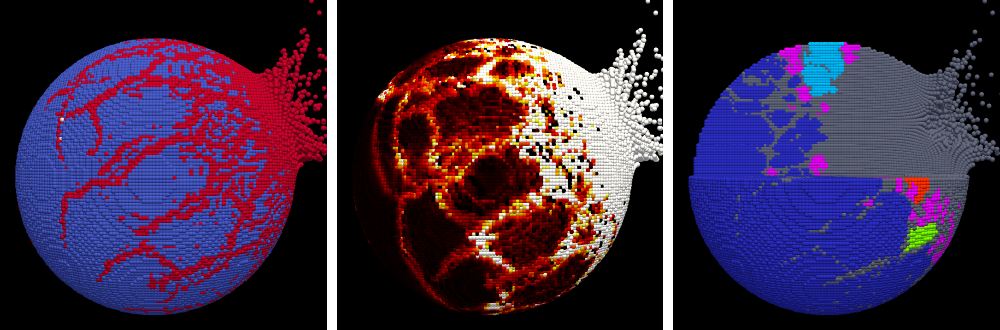
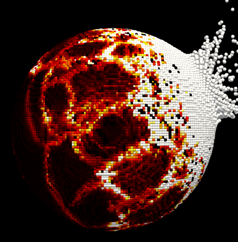
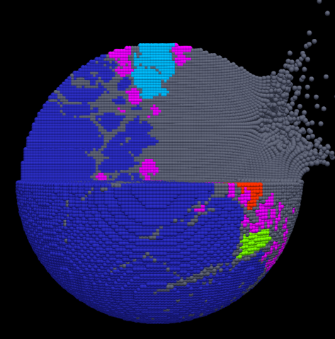

Welcome to SPHSOL





SPHSOL is developed for hypervelocity impact simulations in astrodynamics and planetary science, based on the smoothed particle hydrodynamics method. The code has been used to simulate asteroid collisons and spacecraft impacts to asteroids, as well as the formation of lunar craters. Details are documented in our recent article Numerical simulations of hypervelocity impacts to defend against small bodies.
Features
- Shock physics for geological materials
- Tillotson Equation of state
- Elastic-perfactly plastic regime
- Von-Mises/Lund yield criterion
- Grady-Kipp damage model
- Weibull-based fracture model
- P-α porosity model
- Lagrangian smoothed particle hydrodynamics
- Lagrangian governing equations
- Artificial viscosity
- Neighbor search based on mesh/K-d tree
- Predictor-corrector integration
- Parallel computing based on OpenMP
Access Request
The code is freely available for academic and non-commercial uses, upon reasonable request by Apply to the authors.
Contact
Yifei Jiao (PhD student)
Tsinghua University, Beijing, China
Email: jiaoyf.thu@gmail.com
Any feedback is highly appreciated.